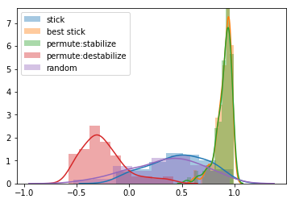

[1]:
import numpy as np
import quail
from quail import Fingerprint, OptimalPresenter
import seaborn as sns
from scipy.spatial.distance import cdist
import pandas as pd
[2]:
# nperms=100
# dist_stick = []
# dist_beststick = []
# dist_perm = []
# dist_permde = []
# dist_rand = []
# dist_bestchoice = []
# for iperm in range(nperms):
# presenter.strategy = 'stabilize'
# # # random
# shuffled_egg = presenter.order(egg, strategy='random')
# weights_rand = quail.analyze(shuffled_egg, analysis='fingerprint')
# dist_rand.append(cdist(weights_rand, weights)[0])
# # reorder next list using stick breaking
# resorted_egg = presenter.order(shuffled_egg, method='stick')
# weights_stick = quail.analyze(resorted_egg, analysis='fingerprint')
# dist_stick.append(cdist(weights_stick, weights)[0])
# # reorder next list using stick breaking
# resorted_egg = presenter.order(shuffled_egg, method='best_stick', nperms=10000)
# weights_stick = quail.analyze(resorted_egg, analysis='fingerprint')
# dist_beststick.append(cdist(weights_stick, weights)[0])
# # reorder next list using permutation
# resorted_egg = presenter.order(shuffled_egg, method='permute', nperms=10000)
# weights_perm = quail.analyze(resorted_egg, analysis='fingerprint')
# dist_perm.append(cdist(weights_perm, weights))
# presenter.strategy = 'destabilize'
# # reorder next list using permutation
# resorted_egg = presenter.order(shuffled_egg, method='permute', nperms=10000)
# weights_permde = quail.analyze(resorted_egg, analysis='fingerprint')
# dist_permde.append(cdist(weights_permde, weights))
# # reorder next list using permutation
# # resorted_egg = presenter.order(shuffled_egg, method='best_choice', nperms=100)
# # weights_choice = quail.analyze(resorted_egg, analysis='fingerprint')
# # dist_bestchoice.append(cdist(weights_choice, weights)[0])
# if iperm % 10 == 0:
# print(iperm)
[3]:
# sns.distplot(dist_stick, label='stick')
# sns.distplot(dist_beststick, label='best stick')
# # sns.distplot(dist_bestchoice, label='best choice')
# sns.distplot(dist_perm, label='permute:stabilize')
# sns.distplot(dist_permde, label='permute:destabilize')
# sns.distplot(dist_rand, label='random')
# sns.plt.legend()
# sns.plt.show()
[4]:
def loadstim():
"""Loads in the stimuli from disk and creates an egg"""
def shuffle_stim(wordpool, nlists=16, nwords=16):
"""Randomizes the stimuli"""
np.random.seed()
return pd.concat([wp[wp['GROUP']==choice].sample(nwords, replace=False).reset_index(drop=True) for choice in np.random.choice(wp['GROUP'].unique(), nlists, replace=False)])
def add_features(wp):
"""Adds features to the stimuli"""
# first letter
wp['FIRST LETTER'] = wp['WORD'].apply(lambda x: x[0])
# word length
wp['WORD LENGTH'] = wp['WORD'].apply(lambda x: len(x))
# color
wp['COLOR'] = [[int(np.random.rand() * 255) for i in range(3)] for i in range(wp.shape[0])]
# location
wp['LOCATION'] = [[np.random.rand() * 85, np.random.rand() * (100 - wp['WORD LENGTH'].iloc[i] * 3)] for i in range(wp.shape[0])]
return wp
def df2egg(df):
"""Converts a dataframe to an egg"""
group = df['GROUP'].unique()
pres = [df[df['GROUP']==i]['WORD'].values.tolist() for i in group]
rec = [[None] for i in group]
features = [format_features(df[df['GROUP']==i]) for i in group]
return quail.Egg(pres=[pres], rec=[rec], features=[features])
def format_features(wp):
"""Formats the features"""
trials=[]
for idx, row in wp.iterrows():
trial = {
'length' : row['WORD LENGTH'],
'size' : row['SIZE'],
'category' : row['CATEGORY'],
'pos' : row['LOCATION'],
'color' : row['COLOR'],
'first_letter' : row['WORD'][0]
}
trials.append(trial)
return trials
# load wordpool
wp = pd.read_csv('/Users/andyheusser/Documents/github/adaptiveFR/exp/static/files/cut_wordpool.csv')
# shuffle the lists and stim
shuffled_stim = shuffle_stim(wp)
# add features
stim_features = add_features(shuffled_stim)
# go from df to egg
egg = df2egg(stim_features)
return egg
# create the stim list
egg = loadstim()
egg.dist_funcs
[4]:
{'category': <function quail.helpers.<lambda>>,
'color': <function quail.helpers.<lambda>>,
'first_letter': <function quail.helpers.<lambda>>,
'length': <function quail.helpers.<lambda>>,
'pos': <function quail.helpers.<lambda>>,
'size': <function quail.helpers.<lambda>>}
[14]:
%%timeit
egg1 = egg.crack(lists=[0], subjects=[0])
egg2 = egg.crack(lists=[1], subjects=[0])
# initialize fingerprint
fingerprint = Fingerprint(init=egg1)
# initialize presenter
params = {
'fingerprint' : fingerprint
}
presenter = OptimalPresenter(params=params, strategy='stabilize')
# update the fingerprint
fingerprint.update(egg1, permute=True, parallel=True)
# reshape weights
weights = fingerprint.state.reshape(1,6)
# reorder next list using permutation
resorted_egg = presenter.order(egg2, method='permute', nperms=2500)
1 loop, best of 3: 20.4 s per loop
[4]:
nperms=100
dist_stick = []
dist_beststick = []
dist_perm = []
dist_permde = []
dist_rand = []
dist_bestchoice = []
for iperm in range(nperms):
# generate a list from the word pool
lst1 = generate_lst(wp)
# simulate an egg
egg1 = simulate_egg(lst1)
# initialize fingerprint
fingerprint = Fingerprint(init=egg1)
# initialize presenter
params = {
'fingerprint' : fingerprint
}
presenter = OptimalPresenter(params=params, strategy='stabilize')
# update the fingerprint
fingerprint.update(egg1, permute=True, parallel=True)
# reshape weights
weights = fingerprint.state.reshape(1,7)
# generate another list from the word pool
lst2 = generate_lst(wp)
# simulate egg 2
egg2 = simulate_egg(lst2)
weights_rand = quail.analyze(egg2, analysis='fingerprint', permute=True, parallel=True)
dist_rand.append(cdist(weights_rand, weights, 'correlation')[0])
# reorder next list using stick breaking
resorted_egg = presenter.order(egg2, method='stick')
weights_stick = quail.analyze(resorted_egg, analysis='fingerprint', permute=True, parallel=True)
dist_stick.append(cdist(weights_stick, weights, 'correlation')[0])
# reorder next list using stick breaking
resorted_egg = presenter.order(egg2, method='best_stick', nperms=nperms)
weights_stick = quail.analyze(resorted_egg, analysis='fingerprint', permute=True, parallel=True)
dist_beststick.append(cdist(weights_stick, weights, 'correlation')[0])
# reorder next list using permutation
resorted_egg = presenter.order(egg2, method='permute', nperms=nperms)
weights_perm = quail.analyze(resorted_egg, analysis='fingerprint', permute=True, parallel=True)
dist_perm.append(cdist(weights_perm, weights, 'correlation'))
presenter.strategy = 'destabilize'
# reorder next list using permutation
resorted_egg = presenter.order(egg2, method='permute', nperms=nperms)
weights_permde = quail.analyze(resorted_egg, analysis='fingerprint', permute=True, parallel=True)
dist_permde.append(cdist(weights_permde, weights, 'correlation'))
if iperm % 10 == 0:
print(iperm)
/Users/andyheusser/Documents/github/quail/quail/analysis.py:105: UserWarning: Pandas doesn't allow columns to be created via a new attribute name - see https://pandas.pydata.org/pandas-docs/stable/indexing.html#attribute-access
'list_length' : data.list_length
0
10
Process PoolWorker-4:
Process PoolWorker-2:
Process PoolWorker-3:
Process PoolWorker-1:
Traceback (most recent call last):
File "/Users/andyheusser/Library/Enthought/Canopy_64bit/User/lib/python2.7/site-packages/multiprocess/pool.py", line 102, in worker
File "/Users/andyheusser/Library/Enthought/Canopy_64bit/User/lib/python2.7/site-packages/multiprocess/process.py", line 258, in _bootstrap
Traceback (most recent call last):
Traceback (most recent call last):
Traceback (most recent call last):
File "/Users/andyheusser/Library/Enthought/Canopy_64bit/User/lib/python2.7/site-packages/multiprocess/process.py", line 258, in _bootstrap
self.run()
File "/Users/andyheusser/Library/Enthought/Canopy_64bit/User/lib/python2.7/site-packages/multiprocess/process.py", line 258, in _bootstrap
self.run()
File "/Users/andyheusser/Library/Enthought/Canopy_64bit/User/lib/python2.7/site-packages/multiprocess/process.py", line 258, in _bootstrap
self.run()
self.run()
File "/Users/andyheusser/Library/Enthought/Canopy_64bit/User/lib/python2.7/site-packages/multiprocess/process.py", line 114, in run
File "/Users/andyheusser/Library/Enthought/Canopy_64bit/User/lib/python2.7/site-packages/multiprocess/process.py", line 114, in run
self._target(*self._args, **self._kwargs)
self._target(*self._args, **self._kwargs)
File "/Users/andyheusser/Library/Enthought/Canopy_64bit/User/lib/python2.7/site-packages/multiprocess/process.py", line 114, in run
File "/Users/andyheusser/Library/Enthought/Canopy_64bit/User/lib/python2.7/site-packages/multiprocess/process.py", line 114, in run
self._target(*self._args, **self._kwargs)
File "/Users/andyheusser/Library/Enthought/Canopy_64bit/User/lib/python2.7/site-packages/multiprocess/pool.py", line 102, in worker
File "/Users/andyheusser/Library/Enthought/Canopy_64bit/User/lib/python2.7/site-packages/multiprocess/pool.py", line 102, in worker
self._target(*self._args, **self._kwargs)
File "/Users/andyheusser/Library/Enthought/Canopy_64bit/User/lib/python2.7/site-packages/multiprocess/pool.py", line 102, in worker
task = get()
task = get()
task = get()
File "/Users/andyheusser/Library/Enthought/Canopy_64bit/User/lib/python2.7/site-packages/multiprocess/queues.py", line 379, in get
File "/Users/andyheusser/Library/Enthought/Canopy_64bit/User/lib/python2.7/site-packages/multiprocess/queues.py", line 379, in get
task = get()
File "/Users/andyheusser/Library/Enthought/Canopy_64bit/User/lib/python2.7/site-packages/multiprocess/queues.py", line 379, in get
racquire()
racquire()
File "/Users/andyheusser/Library/Enthought/Canopy_64bit/User/lib/python2.7/site-packages/multiprocess/queues.py", line 381, in get
KeyboardInterrupt
racquire()
return recv()
KeyboardInterrupt
KeyboardInterrupt
KeyboardInterrupt
---------------------------------------------------------------------------
KeyboardInterrupt Traceback (most recent call last)
<ipython-input-4-d02dbef354d6> in <module>()
57
58 # reorder next list using permutation
---> 59 resorted_egg = presenter.order(egg2, method='permute', nperms=nperms)
60 weights_permde = quail.analyze(resorted_egg, analysis='fingerprint', permute=True, parallel=True)
61 dist_permde.append(cdist(weights_permde, weights, 'correlation'))
/Users/andyheusser/Documents/github/quail/quail/fingerprint.py in order(self, egg, method, nperms, strategy, distfun)
318 return shuffle_egg(egg)
319 elif method=='permute':
--> 320 return order_perm(self, egg, dist_dict, strategy, nperms, distfun) #
321 elif method=='stick':
322 return order_stick(self, egg, dist_dict, strategy) #
/Users/andyheusser/Documents/github/quail/quail/fingerprint.py in order_perm(self, egg, dist_dict, strategy, nperm, distperm)
242 pres_len = len(pres)
243
--> 244 results = Parallel(n_jobs=multiprocessing.cpu_count())(
245 delayed(rand_perm)(pres, features, dist_dict, dist_funcs) for i in range(nperms))
246
/Applications/Canopy.app/appdata/canopy-1.7.4.3348.macosx-x86_64/Canopy.app/Contents/lib/python2.7/multiprocessing/__init__.pyc in cpu_count()
122 try:
123 with os.popen(comm) as p:
--> 124 num = int(p.read())
125 except ValueError:
126 num = 0
KeyboardInterrupt:
Process PoolWorker-7:
Process PoolWorker-5:
Process PoolWorker-8:
Process PoolWorker-6:
Traceback (most recent call last):
Traceback (most recent call last):
Traceback (most recent call last):
Traceback (most recent call last):
File "/Users/andyheusser/Library/Enthought/Canopy_64bit/User/lib/python2.7/site-packages/multiprocess/process.py", line 258, in _bootstrap
File "/Users/andyheusser/Library/Enthought/Canopy_64bit/User/lib/python2.7/site-packages/multiprocess/process.py", line 258, in _bootstrap
File "/Users/andyheusser/Library/Enthought/Canopy_64bit/User/lib/python2.7/site-packages/multiprocess/process.py", line 258, in _bootstrap
self.run()
File "/Users/andyheusser/Library/Enthought/Canopy_64bit/User/lib/python2.7/site-packages/multiprocess/process.py", line 258, in _bootstrap
self.run()
self.run()
self.run()
File "/Users/andyheusser/Library/Enthought/Canopy_64bit/User/lib/python2.7/site-packages/multiprocess/process.py", line 114, in run
File "/Users/andyheusser/Library/Enthought/Canopy_64bit/User/lib/python2.7/site-packages/multiprocess/process.py", line 114, in run
File "/Users/andyheusser/Library/Enthought/Canopy_64bit/User/lib/python2.7/site-packages/multiprocess/process.py", line 114, in run
File "/Users/andyheusser/Library/Enthought/Canopy_64bit/User/lib/python2.7/site-packages/multiprocess/process.py", line 114, in run
self._target(*self._args, **self._kwargs)
self._target(*self._args, **self._kwargs)
self._target(*self._args, **self._kwargs)
self._target(*self._args, **self._kwargs)
File "/Users/andyheusser/Library/Enthought/Canopy_64bit/User/lib/python2.7/site-packages/multiprocess/pool.py", line 102, in worker
File "/Users/andyheusser/Library/Enthought/Canopy_64bit/User/lib/python2.7/site-packages/multiprocess/pool.py", line 102, in worker
File "/Users/andyheusser/Library/Enthought/Canopy_64bit/User/lib/python2.7/site-packages/multiprocess/pool.py", line 102, in worker
task = get()
File "/Users/andyheusser/Library/Enthought/Canopy_64bit/User/lib/python2.7/site-packages/multiprocess/pool.py", line 102, in worker
File "/Users/andyheusser/Library/Enthought/Canopy_64bit/User/lib/python2.7/site-packages/multiprocess/queues.py", line 381, in get
return recv()
task = get()
task = get()
KeyboardInterrupt
task = get()
File "/Users/andyheusser/Library/Enthought/Canopy_64bit/User/lib/python2.7/site-packages/multiprocess/queues.py", line 379, in get
File "/Users/andyheusser/Library/Enthought/Canopy_64bit/User/lib/python2.7/site-packages/multiprocess/queues.py", line 379, in get
racquire()
File "/Users/andyheusser/Library/Enthought/Canopy_64bit/User/lib/python2.7/site-packages/multiprocess/queues.py", line 379, in get
KeyboardInterrupt
racquire()
racquire()
KeyboardInterrupt
KeyboardInterrupt
[67]:
%timeit
shuffled_egg = presenter.order(egg1, strategy='random')
resorted_egg = presenter.order(shuffled_egg, method='permute', nperms=2500)
weights_perm = quail.analyze(resorted_egg, analysis='fingerprint')
---------------------------------------------------------------------------
KeyError Traceback (most recent call last)
<ipython-input-67-8974ec0814c0> in <module>()
1 get_ipython().magic(u'timeit')
----> 2 shuffled_egg = presenter.order(egg1, strategy='random')
3 resorted_egg = presenter.order(shuffled_egg, method='permute', nperms=2500)
4 weights_perm = quail.analyze(resorted_egg, analysis='fingerprint')
/Users/andyheusser/Documents/github/quail/quail/fingerprint.py in order(self, egg, method, nperms, strategy, distfun)
322 strategy = self.strategy
323
--> 324 dist_dict = compute_distances_dict(egg)
325
326 if (strategy=='random') or (method=='random'):
/Users/andyheusser/Documents/github/quail/quail/fingerprint.py in compute_distances_dict(egg)
651 for feature in dist_funcs:
652
--> 653 distances[item1][item2][feature] = dist_funcs[feature](features_list[idx1][feature],features_list[idx2][feature])
654
655 return distances
KeyError: 'CATEGORY'
[6]:
%matplotlib inline
import matplotlib.pyplot as plt
sns.distplot(1-np.array(dist_stick), label='stick')
sns.distplot(1-np.array(dist_beststick), label='best stick')
# sns.distplot(dist_bestchoice, label='best choice')
sns.distplot(1-np.array(dist_perm), label='permute:stabilize')
sns.distplot(1-np.array(dist_permde), label='permute:destabilize')
sns.distplot(1-np.array(dist_rand), label='random')
plt.legend()
[6]:
<matplotlib.legend.Legend at 0x10af4ba10>

[25]:
def shuffle_stim(wordpool, nlists=16, nwords=16):
return pd.concat([wp[wp['GROUP']==choice].sample(nwords).reset_index(drop=True) for choice in np.random.choice(wp['GROUP'].unique(), nlists, replace=False)])
def add_features(wp):
# first letter
wp['FIRST LETTER'] = wp['WORD'].apply(lambda x: x[0])
# word length
wp['WORD LENGTH'] = wp['WORD'].apply(lambda x: len(x))
# color
wp['COLOR'] = [[int(np.random.rand() * 255) for i in range(3)] for i in range(wp.shape[0])]
# location
wp['LOCATION'] = [[np.random.rand() * 85, np.random.rand() * (100 - wp['WORD LENGTH'].iloc[i] * 3)] for i in range(wp.shape[0])]
return wp
def df2egg(df):
group = df['GROUP'].unique()
pres = [df[df['GROUP']==i]['WORD'].values.tolist() for i in group]
rec = [[None] for i in group]
features = [format_features(df[df['GROUP']==i]) for i in group]
return quail.Egg(pres=[pres], rec=[rec], features=[features])
def format_features(wp):
trials=[]
for idx, row in wp.iterrows():
trial = {
'length' : row['WORD LENGTH'],
'size' : row['SIZE'],
'category' : row['CATEGORY'],
'pos' : row['LOCATION'],
'color' : row['COLOR'],
'first letter' : row['WORD'][0]
}
trials.append(trial)
return trials
# load wordpool
wp = pd.read_csv('/Users/andyheusser/Documents/github/quail/quail/data/cut_wordpool.csv')
# shuffle the lists and stim
shuffled_stim = shuffle_stim(wp)
# add features
stim_features = add_features(shuffled_stim)
egg = df2egg(stim_features)
[26]:
egg.dist_funcs
[26]:
{'CATEGORY': <function quail.helpers.<lambda>>,
'COLOR': <function quail.helpers.<lambda>>,
'FIRST LETTER': <function quail.helpers.<lambda>>,
'GROUP': <function quail.helpers.<lambda>>,
'LOCATION': <function quail.helpers.<lambda>>,
'SIZE': <function quail.helpers.<lambda>>,
'WORD LENGTH': <function quail.helpers.<lambda>>,
'category': <function quail.helpers.<lambda>>,
'color': <function quail.helpers.<lambda>>,
'first letter': <function quail.helpers.<lambda>>,
'length': <function quail.helpers.<lambda>>,
'pos': <function quail.helpers.<lambda>>,
'size': <function quail.helpers.<lambda>>}
[6]:
# generate a list from the word pool
lst1 = generate_lst(wp)
# simulate an egg
egg = simulate_egg(lst1)
[ ]:
# def format_stim(wp):
# trials=[]
# for idx, row in wp.iterrows():
# trial = {
# 'type' : 'p',
# 'text' : row['WORD'],
# 'length' : row['WORD LENGTH'],
# 'size' : row['SIZE'],
# 'category' : row['CATEGORY'],
# 'listid' : row['GROUP'],
# 'pos' : row['LOCATION'],
# 'rgb' : row['COLOR'],
# }
# trials.append(trial)
# return trials